Изначально продукт развивался без UI‑кита, из-за чего интерфейс получился несогласованным и сложным в доработке. Нужно было создать систему компонентов и упростить дальнейшую работу команды.
Case 01
Silkway
Две ключевые задачи внутри Silkway: создание UI-кита и редизайн профиля пользователя с фокусом на понятную структуру и сценарии.
Task 01
Создание UI‑кита и системы компонентов
Первая задача внутри Silkway: навести порядок в интерфейсе, собрать систему компонентов и сделать продукт проще в масштабировании для дизайнеров и разработчиков.
Компоненты не переиспользовались, стили дублировались, а изменения требовали ручной правки во множестве мест. Интерфейс выглядел неровным из-за несогласованных отступов, размеров и типографики.
Скорость разработки выросла на 60%, а стоимость разработки снизилась за счет уменьшения трудозатрат и упрощения поддержки продукта.
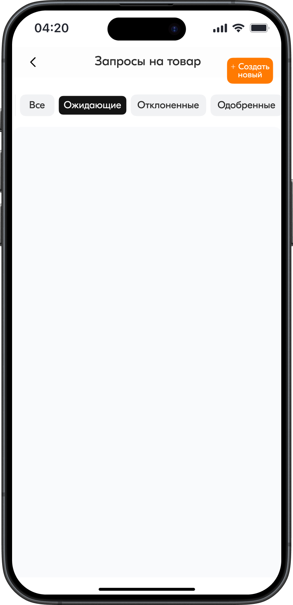
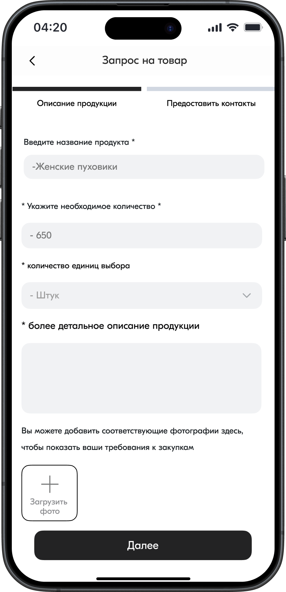
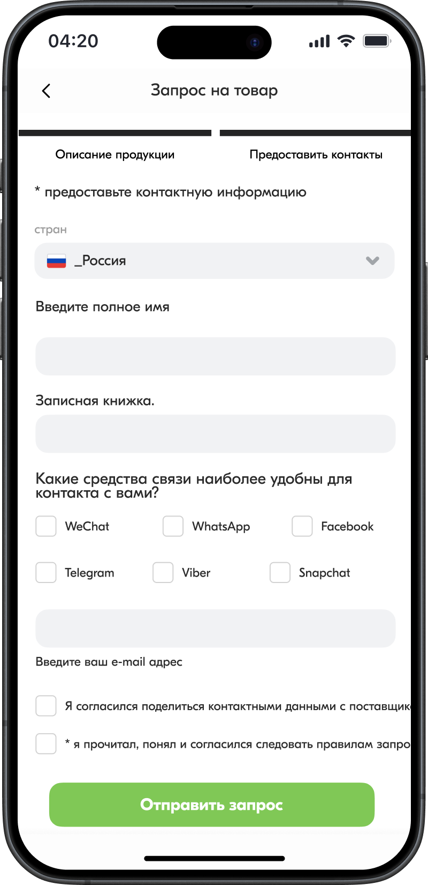
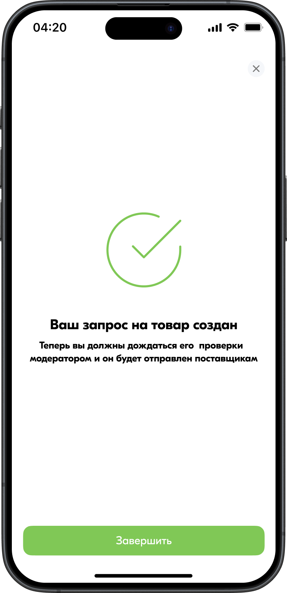
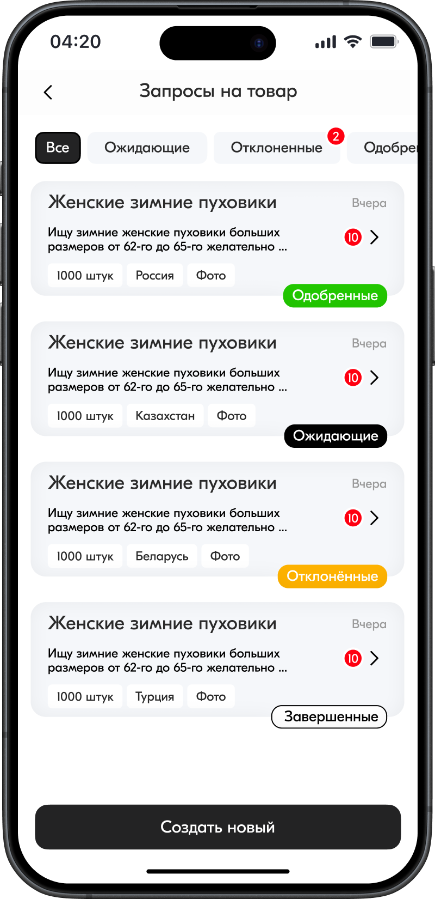
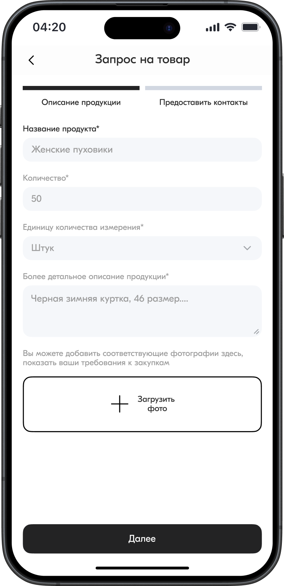
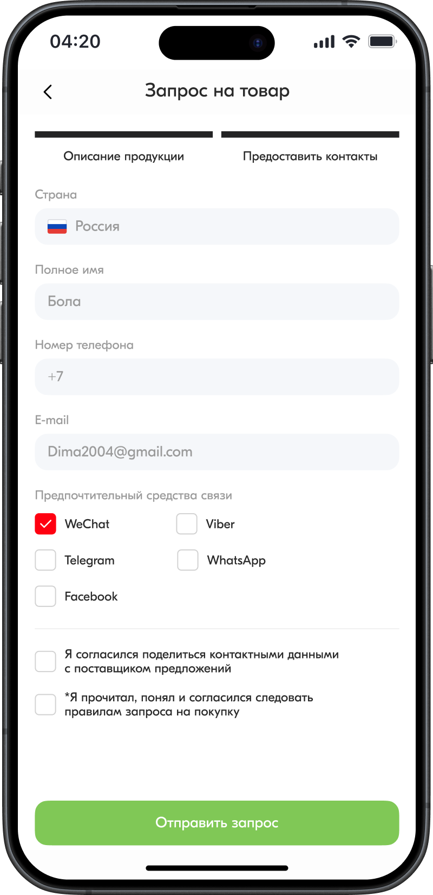
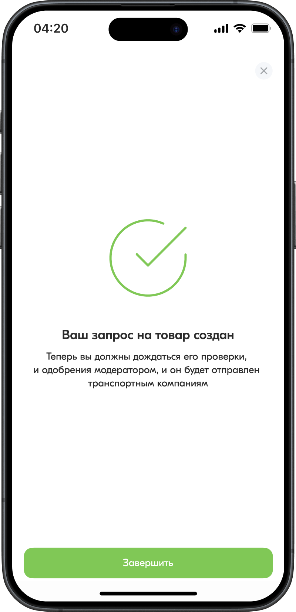
Мы пересобрали основу интерфейса и собрали библиотеку универсальных компонентов, которые можно переиспользовать на разных экранах без ручного дублирования.
Для продукта были заданы общие правила отступов, типографики, цветов и состояний. За счет этого интерфейс стал ровнее, а новые экраны — проще в сборке и поддержке.
В результате процесс разработки стал более предсказуемым, а сам продукт — визуально цельным.
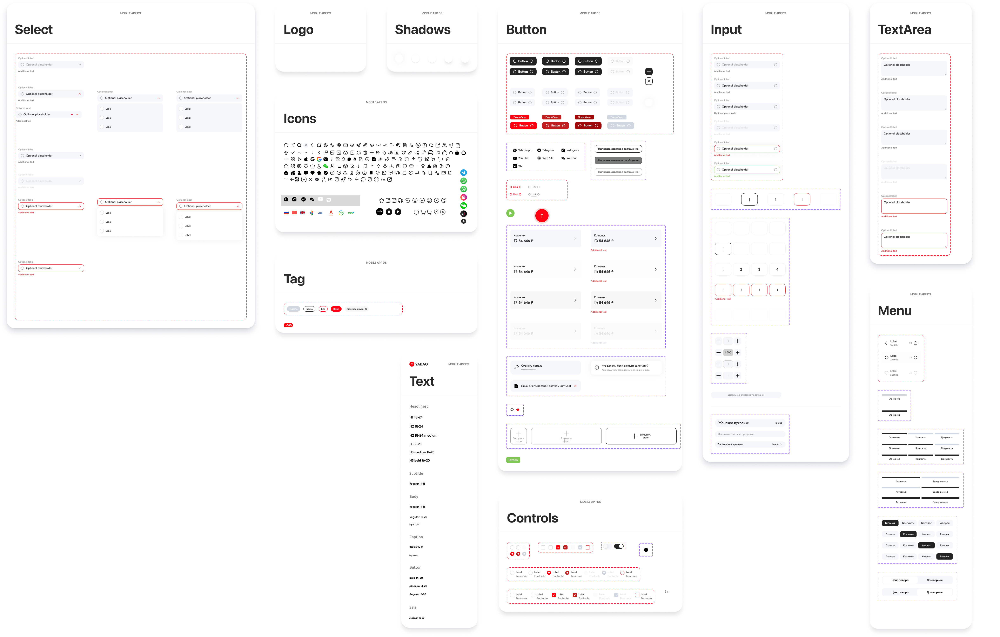
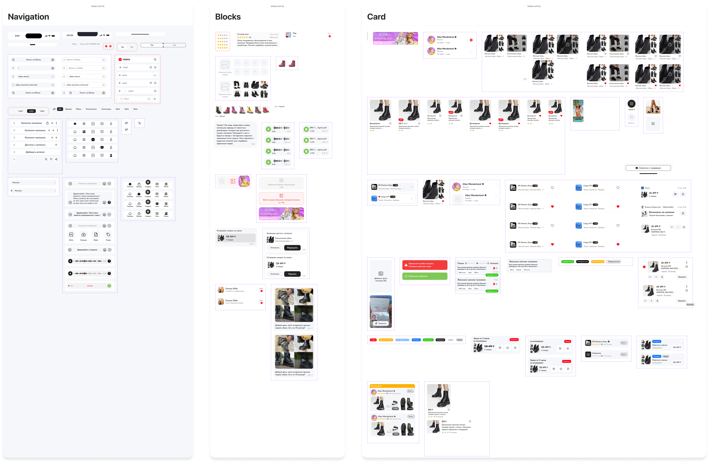
Task 02
UX-редизайн профиля пользователя
Вторая задача внутри Silkway: перейти от линейного списка к удобному дашборду с акцентом на ключевые действия пользователя.
Переработать экран профиля с фокусом на ключевые пользовательские сценарии, упростить навигацию и сократить время до основных действий. Также важно было улучшить информационную архитектуру и сделать интерфейс более понятным и предсказуемым для пользователя.
Старая версия профиля выглядела как линейный список без выраженной визуальной иерархии. Ключевые разделы терялись среди второстепенных пунктов, из-за чего навигация усложнялась, а время до целевого действия увеличивалось.
После редизайна ежедневная активность пользователей выросла на +18%, а количество переходов в ключевые разделы увеличилось на +25%, что показало рост вовлеченности и более удобную работу с интерфейсом.
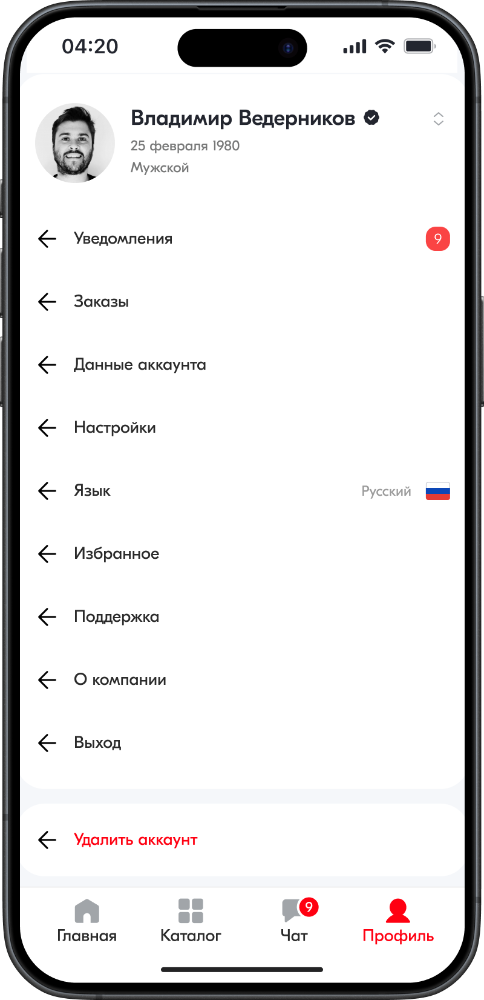
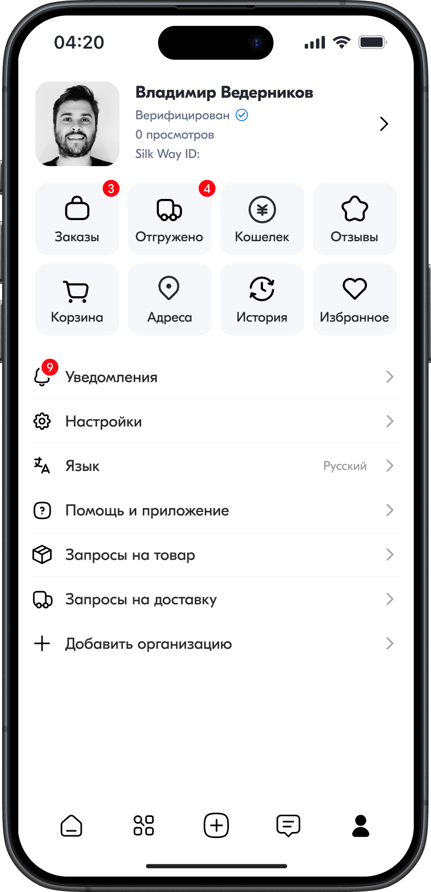
Структура экрана была выстроена вокруг действий пользователя. Профиль разделили на логические блоки, чтобы упростить восприятие и сделать навигацию более понятной.
Верхняя часть стала зоной профиля с аватаром, именем и статусом, а основные сценарии были вынесены в отдельный блок в виде сетки. Это ускорило сканирование и сделало ключевые действия заметнее.
Счетчики активности и второстепенные функции были собраны в более ясную иерархию, поэтому экран перестал восприниматься как список настроек и стал рабочим дашбордом.
TAXI TROIKA
Next case →
Lawber